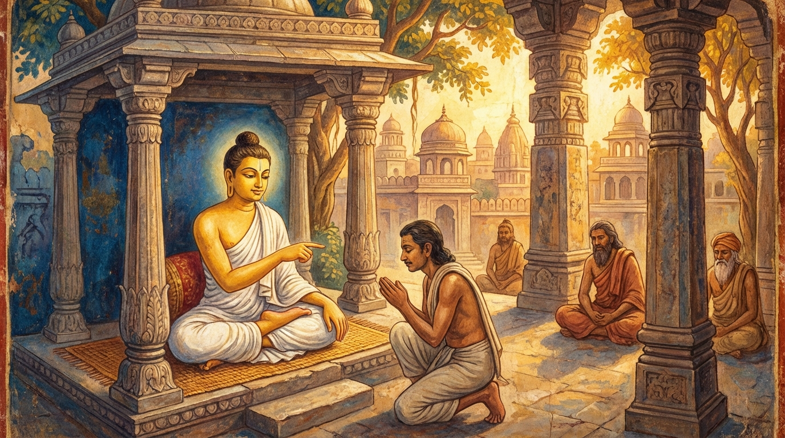

10. දුද්දද ජාතකය (180)
“දුද්දදං දදමානානං” (දීමට අපහසු දේ දෙනු ලබන්නවුන්ට) යනාදී වශයෙන් එන මේ ධර්ම දේශනාව ශාස්තෘන් වහන්සේ ජේතවනාරාමයෙහි වැඩ වාසය කරන සමයෙහි සාමූහිකව දුන් දානයක් (ගණ දානයක්) අරබයා වදාළ සේක. සැවැත් නුවර යහළු කෙළඹි පුත්රයෝ දෙදෙනෙක් සම්මාදම් එක්රැස් කොට, සියලු පිරිකර සහිත දානයක් සූදානම් කර, බුදුරජාණන් වහන්සේ ප්රමුඛ භික්ෂු සංඝයාට ආරාධනා කොට, සත් දිනක් මුළුල්ලේ මහා දන් දී, සත්වන දිනයෙහි සියලු පිරිකර පූජා කළහ. ඔවුන් අතරින් එම පිරිසගේ නායකයා ශාස්තෘන් වහන්සේට වැඳ එකත්පස්ව හිඳ, “ස්වාමීනි, මේ දානයෙහි බොහෝ දේ දායක වූ අයද වෙති, ස්වල්ප වශයෙන් දායක වූ අයද වෙති. ඒ සියලු දෙනාටම මේ දානය මහත්ඵල වේවා!” යි දානමය පින පැවරුවේය. ශාස්තෘන් වහන්සේ, “උපාසකවරුනි, ඔබ විසින් බුදුරජාණන් වහන්සේ ප්රමුඛ භික්ෂු සංඝයාට දන් දී මෙසේ පින් පැවරීමෙන් මහත් කුසල කර්මයක් සිදු කරන ලදි. පුරාණ පණ්ඩිතයෝ ද දන් දී මේ අයුරින්ම පින් පැමිණවූහ” යි වදාරා, ඔහු විසින් ආරාධනා කරන ලදුව අතීත කථාව ගෙනහැර දැක්වූ සේක.
අතීතයෙහි බරණැස් නුවර බ්රහ්මදත්ත රජු රාජ්ය කරන කල්හි බෝධිසත්වයෝ කාසි රට බමුණු කුලයක උපත ලබා, වැඩිවියට පත්ව, තක්සලා නුවරින් සියලු ශිල්ප ඉගෙන, ගිහිගෙය අතහැර ඍෂි පැවිද්දෙන් පැවිදි වූහ. අනතුරුව තවුස් පිරිසකගේ නායකයා වී හිමාල වනයෙහි බොහෝ කාලයක් වාසය කොට, ලුණු ඇඹුල් සෙවීම පිණිස ජනපද චාරිකාවෙහි යෙදෙමින් බරණැස් නුවරට පැමිණියහ. එහි රජ උයනෙහි නැවතී පසුදින නුවර දොරටුව අසල ගමක පිරිවර සමඟ පිඬු සිඟා වැඩියහ. මිනිස්සු දානය දුන්හ. ඊට පසුදින බරණැස් නුවර පිඬු සිඟා වැඩියහ. මිනිස්සු සතුටින් පිළිගෙන භික්ෂාව දී, සාමූහිකව සම්මාදම් එකතු කොට, දන් පිළියෙල කර, තවුස් පිරිසට මහා දානයක් පැවැත්වූහ. දානය අවසානයේ පිරිස් නායකයා පෙර පරිදිම පවසා එම ක්රමයෙන්ම දානමය පින පැවරුවේය. බෝධිසත්වයෝ, “ඇවැත්නි, සිතේ පැහැදීම ඇති කල්හි දානය ස්වල්පයයි කීමක් නැතැයි” වදාරා අනුමෝදනා කරමින් පහත ගාථාවන් දේශනා කළහ.

“දීමට දුෂ්කර වූ දේ දෙන, කිරීමට අපහසු දේ කරන (සත්පුරුෂයන්ව) අසත්පුරුෂයෝ අනුකරණය නොකරති. සත්පුරුෂ ධර්මය දැනගැනීම (හා අනුගමනය කිරීම) අපහසුය.”
“එබැවින් සත්පුරුෂයන්ගේ සහ අසත්පුරුෂයන්ගේ මෙලොවින් මතු ගතිය (ඉරණම) වෙනස් වේ. අසත්පුරුෂයෝ නිරයට යති. සත්පුරුෂයෝ ස්වර්ගය පිහිට කරගනිති.”
යනුවෙන් මෙම ගාථාව වදාළහ.
එහි අර්ථ විවරණය මෙසේය: දුද්දදං යනු, ලෝභය ද්වේෂය ආදී ක්ලේශයන්ට යටත් වූ අඥාන පුද්ගලයන්ට දානය දීම කළ නොහැකි දෙයකි. එබැවින් එය ‘දීමට අපහසු දෙයක්’ (දුද්දද) යැයි කියනු ලැබේ. තං දදමානානං දුක්කරං කම්ම කුබ්බතං යනු, එම දානමය පුණ්යකර්මය සියලු දෙනාටම කළ නොහැකි බැවින්, දුෂ්කර වූ එම ක්රියාව කරන්නවුන්ව යන්නයි. අසන්තො යනු, නුවණ නැති බාලයෝ ය. නානුකුබ්බන්ති යනු, (බාලයෝ) එම යහපත් ක්රියාව අනුකරණය නොකරති. සතං ධම්මො යනු, පණ්ඩිතයන්ගේ ස්වභාවයයි; මෙය දානය අරබයා කියන ලද්දකි. දුරන්නයො යනු, ඵලය හා සම්බන්ධ බැවින් දැන ගැනීමට අපහසුය; එනම් ‘මෙබඳු දානයකට මෙබඳු විපාකයක් ලැබෙයි’ යන්න අවබෝධ කර ගැනීම දුෂ්කර ය. තවද, දුරන්නයො යනු ‘ලැබීමට අපහසු’ යන අර්ථය ද දෙයි; අඥානයන්ට දානය දී එහි ඵලවිපාක ලැබිය නොහැකිය යන අර්ථයි. නානා හොති ඉතො ගති යනු, මෙලොව අතහැර පරලොව යන්නවුන්ගේ ප්රතිසන්ධිය (උපත) විවිධ වෙයි. අසන්තො නිරයං යන්ති යනු, නුවණ නැති දුස්සීල අය දන් නොදී, සිල් නොරැක නිරයට යති. සන්තො සග්ගපරායණා යනු, පණ්ඩිතයෝ වනාහි දන් දී, සිල් රැක, පෙහෙවස් සමාදන් වී, ත්රිවිධ සුචරිතය පුරවා සුගතිය පිහිට කරගනිති; මහත් වූ දිව්ය සම්පත් අනුභව කරති.
මෙසේ බෝධිසත්වයෝ දානානුමෝදනාව සිදුකොට, වැසි සාරමස එහිම වාසය කළහ. වස් කාලය අවසන් වූ පසු හිමාල වනයට ගොස් ධ්යාන උපදවාගෙන, (මරණින් මතු) නොපිරිහුණු ධ්යාන ඇතිව බ්රහ්ම ලෝකයෙහි උපන්හ.
බුදුරජාණන් වහන්සේ මෙම ධර්ම දේශනාව ගෙනහැර දක්වා ජාතක කථාව නිමවා වදාළ සේක. “එකල තාපස පිරිස වූයේ දැන් මේ බුදු පිරිසය. ගණ ශාස්තෘවරයා වූයේ මම ම වෙමි” යි වදාළ සේක.
දසවන දුද්දද ජාතක වර්ණනාව යි.
තුන්වන කල්යාණ වර්ගය නිමියේය.
එහි උද්දානය (සාරාංශ ගාථාව) මෙසේය:
කල්යාණධම්ම, දද්දර, මක්කටි, දුබ්භිමක්කට, ආදිච්චුපට්ඨාන, කළායමුට්ඨි, තින්දුක, කච්ඡප, සතධම්ම සහ දුද්දද යන මේ ජාතක දසයයි.